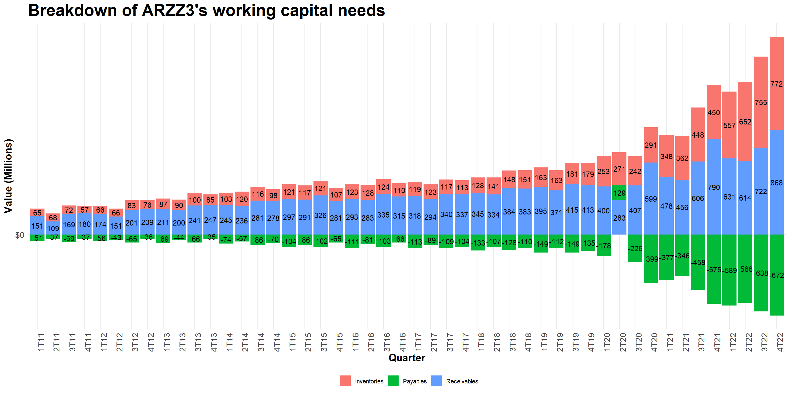
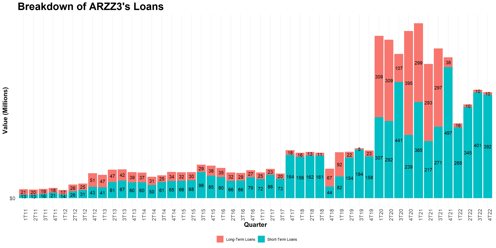

Short-term Financial Planning
Lucas S. Macoris
Financing Short-term needs
In our previous lecture, we saw that firms need not only long-term, but also short-term investments
These, in general, are referred to as net working capital:
- If a firm is growing, it is likely the case that its net working capital needs are also trending upwards
- In order to foster such growth, the firm needs to firm about how to fund it!
Firms may also present seasonal sales patterns:
- A firm can generate surpluses in some given quarters…
- But it might demand capital in other quarters
Question: how does a company manage its short-term needs within the year?
Financing Short-term needs - ARRZ3
Breaking Down Short-Term Financing Needs - ARRZ3

Breaking Down Debt Trends - ARRZ3

Overview
Overall, it seems that both Sales and Net Working Capital are trending upwards
- Higher demand for products \(\rightarrow\) higher working capital needs
- Higher need to extend funding to foster increased activity
Looking at the specifics of Arezzo’s working capital accounts, it seems it is being fueled mainly by Inventories, although Receivables have also increased significantly
Payables have substantially increased to sustain the firm’s growth. However, overall net capital needs have increased
How to finance the remaining part?
In the next slides, we’ll study a step-by-step guide in short-term financing, following (Berk and DeMarzo 2023)
Step 1: Forecasting Short-term Financing Needs
The first step in short-term financial planning is to forecast the company’s future cash flows
- A company forecasts its cash flows to determine whether it will have surplus cash or a cash deficit for each period
- The management needs to decide whether that surplus or deficit is temporary or permanent
Within short-term financing planning, we are interested in analyzing the types of cash surpluses or deficits that are temporary and, therefore, short-term in nature
Typically, firms require short-term financing for three reasons:
- Seasonalities
- Negative Cash-Flow shocks
- Positive Cash-Flow shocks
Seasonalities
When sales are concentrated during a few months, sources and uses of cash are also likely to be seasonal:
- Firms in this position may find themselves with a surplus of cash during some months that is sufficient to compensate for a shortfall during other months
- However, because of timing differences, such firms often have short-term financing needs
The introduction of seasonal sales creates some dramatic swings in short-term cash flows:
While Cost of Goods Sold generally fluctuates proportionally with sales, other costs (such as administrative overhead and depreciation) do not, leading to large changes in the firm’s net income by quarter
Net working capital changes are more pronounced
Seasonal sales create large short-term cash flow deficits and surpluses: because of this, a firm may opt to invest surpluses in short-term investment options and use it during downturns
Negative and Positive Cash-Flows
Negative Cash-Flow Shocks
Occasionally, a company will encounter circumstances in which cash flows are temporarily negative for an unexpected reason (e.g, higher costs, legal actions, supply shortages, etc)
Such unexpected hits in the firm’s cash flow expectations might induce to an increase in financing needs
Example: what happened to delivery food chains during the onset of the pandemic in Brazil?
Positive Cash-Flow Shocks
Increases in firm’s expected sales can leader to increases in short-term financing needs. Going back to the example that we saw, ARZZ’s growth in sales was accompanied by a surge in working capital needs!
A firm may have a temporary deficit before it actually reaps out the benefits of positive cash-flow shocks (e.g, Marketing investments)
Step 2: Short-term Financing Needs
- After forecasting the need for short-term financing, it is time to decide how it will be financed:
On the one hand, there is an opportunity cost of holding cash in accounts that pay little or no interest - you could have been better-off by investing this money in the operation and/or in financial instruments!
On the other hand, firms also face high transaction costs if they need to negotiate a loan on short notice to cover a cash shortfall
- The Matching Principle states firms can increase their value by adopting a policy that minimizes the costs associated with the aforementioned trade-off:
Long-term needs - or permanent needs should be financed with Long-term sources of funds
Short-term needs - or temporary needs - should be financed with Short-term debt
Matching Principle - Permanent Working Capital
- The permanent portion of working capital is the amount that a firm must keep invested in its short-term assets to support its continuing operations. This investment in working capital is required so long as the firm remains in business:
For example, as ARZZ3 grows in sales and market-share, its working capital levels continue grow year-over-year because of the long-run trend!
The matching principle indicates that the firm should finance this permanent portion of working capital with long-term sources of funds
- Why? In general, such sources have lower transaction costs than short-term sources of funds, which would have to be replaced more often
Example: after forecasting permanent working capital needs, if funding occurs through short-term sources (say, 1 year), firms are exposed to interest rate risk – since you’ll need this money for the next years, you may have to refinance at a higher rate in the future!
Matching Principle - Temporary Working Capital
- Another portion of a firm’s investment in its accounts receivable and inventory is temporary and results from seasonal fluctuations in the firm’s business or unanticipated shocks:
- This temporary working capital need is the difference between the actual level of investment in short-term assets and the permanent working capital investment outlined before
- It is considered to be temporary because it relates to short-term fluctuations in the need for working capital in a given period and that will likely not be needed in subsequent periods - for example, monthly seasonality due to Black Friday or Amazon Prime Day
Following the Matching Principle, temporary working capital needs it should be financed with short-term sources!
Why? As the firm won’t need to keep a high level of working capital after some time, it is optimal from a cost perspective to shut down on any funding expenses - for example, don’t keep costly but unused credit lines active
Financing Policies - Aggresive Policy
What if we depart from the Matching Principle whenever financing firm’s activity? An Aggresive Policy is the case if we financed permanent working capital needs with short-term debt:
- When the short-term debt comes due, the firm will have to negotiate a new loan
- This new loan will involve additional transaction costs, and it will carry whatever market interest rate exists at the time
When firms can benefit from this policy? As short-term debt is less sensitive to the firm’s credit quality than long-term debt, firms can benefit from it whenever market imperfection are more acute
Furthermore, when the yield curve is upward sloping, the interest rate on short-term debt is lower than the rate on long-term debt
However, shareholders incur in funding risk, which is the risk of incurring financial distress costs if firm is not able to refinance its debt in a timely manner or at a reasonable rate
Financing Policies - Conservative Policy
Alternatively, a firm could finance its short-term needs with long-term debt, a practice known as a Conservative Financing policy: use long-term sources of funds to finance its fixed assets, permanent working capital, and some of its seasonal needs
Whenever implementing such policy, there will be periods where there is excess cash - i.e, those periods when the firm requires little or no investment in temporary working capital
While such policy significantly reduces funding risks, it has its drawbacks:
- Excess cash may earn below-average interest rates
- Holding higher cash levels can also distort managers incentives - i.e, pay perks for themselves or use it non-productively
Hands-on Exercise: analyzing Arezzo’s Financing Policy
Download Arezzo’s Annual Financial Statements through its Investors Relations website (access here, also available on eClass®)
Go straight to the supplementary notes (“Notes to the financial statements”) section and identify its loans breakdown (“Loans and Borrowings”), p. 62. Which sources are being employed and for what types of investments?
How would you describe the company’s short-term financing policy?
Short-term Financing Sources
So far, we saw that firm’s short-term capital needs can arise due to from temporary and permanent needs, according to (Berk and DeMarzo 2023):
Permanent needs relate, in general, to working capital investment that will be necessary throughout the lifetime of a firm (or a project)
Temporary needs, on the other hand, arise due to seasonalities, positive and negative cash-flow shocks
Ways for financing short-term working capital needs range from a variety of sources:
- Bank Financing
- Commercial Papers
- Secured Financing
In what follows, we’ll details the main aspects of each financing source
Bank Financing
- One of the primary sources of short-term financing, especially for small businesses, is the commercial bank. Some types include:
Single Payment Loan: pay interest on the loan and pay back the principal in one lump sum at the end of the loan. Can have a fixed or variable interest rate structure
Credit lines: case where a bank agrees to lend a firm any amount up to a stated maximum
- Generally used for seasonal needs
- Commited versus uncommited
- Revolving Credit lines
Bridge Loans: used to “bridge the gap” until a firm can obtain long-term financing
- Watch-out for stipulations and fees! These increase the effective interest rate: origination fees, commitment fees, compensating balance requirements etc
Commitment Fee - Example
Various loan fees charged by banks affect the effective interest rate that the borrower pays
For example, the commitment fee associated with a committed line of credit increases the effective cost of the loan to the firm. The “fee” can really be considered an interest charge under another name!
Example: Suppose that a firm has negotiated a committed line of credit with a stated maximum of $1 million and an interest rate of 10% ( EAR) with a bank. The commitment fee is 0.5% (EAR). At the beginning of the year, the firm borrows $800,000. It then repays this loan at the end of the year, leaving $200,000 unused for the rest of the year. The total cost of the loan is:
(+) Interest on borrowed funds: \(\small \$800,000 \times 10\% = \$80,000\)
(+) Commitment on unused portion: \(\small \$200,000 \times 0.5\% = \$1,000\)
(=) Total Cost = \(\small\$81,000\)
(=) Effective Interest Rate, inclusive of Fees: \(\small (\$881,000/\$800,000)-1=10.125\%\)
Loan Origination Fee - Example
- Another common type of fee is a loan origination fee, which a bank charges to cover credit checks and legal fees:
- The firm pays the fee when the loan is initiated; like a discount loan, it reduces the amount of usable proceeds that the firm receives.
- And like the commitment fee, it is effectively an additional interest charge.
Example: assume that it is offered a $500,000 loan for 3 months at an annual percentage rate (APR) of 12%. This loan has a loan origination fee of 1% charged on the principal.
- The amount of the loan origination fee is \(\small 1\% \times \$500,000 = \$5,000\)
- The actual amount borrowed is \(\small \$500,000-\$5,000=\$495,000\)
- Interest rate is charged on the total, and not the discounted value: \(\small (\$500,000 \times 3\%=\$15,000)\)
- Therefore, the annual effective interest rate is \(\small \$515,000/\$495,000 - 1 = 4.04\%\)
Compensating Balance Requirements - Example
- Regardless of the loan structure, the bank may include a compensating balance requirement in the loan agreement that reduces the usable loan proceeds
Example: assume that, in the previous example, rather than charging a loan origination fee, the bank requires that the firm keep an amount equal to 10% of the loan principal in a non-interest-bearing account with the bank as long as the loan remains outstanding
- If that is the case, then the requirement amount is \(\small 10\% \times \$500,000 = \$50,000\)
- Thus, the firm has only \(\small\$450,000\) of the loan proceeds actually available for use, although it must pay interest on the full loan amount
- Therefore, the actual three-month interest rate paid is:
\[ \small \dfrac{(500,000 + 15,000 -50,000)}{(500,000-50,000)}-1 = \dfrac{465,000}{450,000}-1=3.33\% \]
Other thoughts on bank financing
The three examples outlined before are situations where banks charge extra costs from customers. Why these costs arise?
- Legal requirement checks
- Credit analysis
- Need to reduce the risk of the amount to recover in case of default
Some firms (in general, smaller and newer firms) may not have other options rather than a bank. But that does not mean that bank financing will always lead to higher implied costs:
- Long-standing client-bank relationships can convey information about the credit quality of the firm and reduce interest rates
- Some banks specialize in certain activities (e.g, Rabobank) to better manage risks and understand client’s inherent risks
There can also be subsidized operations for certain activities. See, for example, the role of BNDES in Brazil
Commercial Papers
Commercial paper is a short-term, unsecured debt used by large corporations
The interest on commercial paper is typically paid by selling it at an initial discount, in the likes of what we have with Brazilian government bonds (Tesouro Direto)
In Brazil, also referred to as nota promisória comercial: the goal is to target short-term financing
Example: suppose that a firm issues three-month commercial paper with a \(\small\$100,000\) face value and receives \(\small\$98,000\). What is the annual effective rate is the firm paying for its funds?
- Using our present value formula to analyze the full 3-period interest rate, we have:
\[ \small FV=PV\times(1+i)^n \rightarrow i=\dfrac{100,000}{98,000}-1 =2.04\% \]
Commercial Papers in the U.S. at the onset of COVID-19
The Covid-19 crisis severely disrupted the functioning of short-term US dollar funding markets, in particular the commercial paper and certificate of deposit segments1
- Investors become reluctant or unable to provide new credit or roll over existing ones…
- Issuers faced challenges in obtaining short-term financing at reasonable rates…
- Fligh to safety: investors withdrawn money from riskier assets to move it to safer affects…
- This movement cascaded over to fund managers in which, pressured by withdraws, had to fire-sale assets at higher discounts to make liquidity
- Contagion Effect: due to these accumulated effects, other markets such as the stock market experienced unusually high volatility during the period
Secured Financing
Businesses can also obtain short-term financing by using secured loans, which are loans collateralized with short-term assets
Commercial banks and Financial companies that purchase account receivables of other companies are the most common sources for secured short-term loans. Some options for secured financing include:
- Using Accounts Receivable as collateral
- Using Inventories as collateral
- Properly, Plant, and Equipment (PPE) as collateral
How does collateral help in funding? The better the collateral assets, the better the funding conditions! As funding partners assess the liquidity of the collateralized assets, they’ll assess the specific funding conditions (amount, interest rate, etc) available
Secured Financing in Brazil - Desconto de Duplicatas
- This type of operation is, in essence, a loan from the bank to the firm that is secured by accounts receivable:
- The firm sells its products to customers, which will pay in a determined date
- The bank then provides a loan to the firm, which will receive a discounted value immediately
- The bank will then receive the original amount stated in the accounts receivable when the firm’s clients actually pay for the products
All else held constant, this operation has a lower cost than a simple loan, as accounts receivables are backing up the loan and reducing the bank’s risk
It is important to note that the bank does not bear the risk of not being paid - the obligation from the firm to repay the bank persists!
Other examples of secured financing: Compor, Vendor operations
Factorings
Similar to a discount operation, the key difference is the risk in the event of non-payment:
On the one hand, in discount operations (desconto de duplicatas), a financial institution provides cash-in-advance to a firm using its accounts receivable as a collateral, with the firm bearing the risk of non-payment from its customers
On the other hand, in a factoring operation, a commercial partner acquires the credit and bears the full responsibility of its risk, providing the firm with cash-in-advance
Factoring firms are not financial institutions, but rather commercial partners (“Sociedade mercantil”), which can be financed through equity or bank financing, but not publicly shares
Factorings do not merely involve financial service, but rather a series of continuous commercial services, such as credit analysis and management, risk management, payables and receivables management, and buying the firm’s account’s receivables and bearing its risk
Fundos de Investimento em Direito Creditório - FIDCs
A common way to organize resources to finance short-term mismatches is through the use of a FIDC1, which is similar to discount operations and factoring
How it works: suppose that a firm sells its products to customers with a 90-days payment, and it needs money today to finance its operations:
- A FIDC collects money from investors aiming to be exposed to credit operations
- A FIDC then buys several credit obligations, in the same way that a factoring firm does, and bears the risk of the operation
- Ultimately, the shareholders of the FIDC are the ones bearing the risk in the event of non-payment by the firm’s clients
- Key benefit: FIDCs do not need to concentrate risk in only one type of credit operation and/or customer, and can be scaled more easily by through publicly issuances (emissões)
Institutional stability and investor protection
- Whenever property rights and contract-enforcement are put in risk, lenders adjust interest rates to cope with the expected risk
- For example, as seizing collateral may involve a lot of bureaucracy, banks adjust the interest rates for some specific credit contracts
That helps to explain, for example, why countries with higher levels of institutional development, such as higher investor protection and stable laws, have lower interest rates
It also helps to explain why, even with decreases in the baseline Brazilian interest rate (SELIC), these changes are not fully reflected in the interest rate offered to customers and firms
Creating (dis)incentives?
An interesting discussion in terms of firms’ incentives to comply with credit terms rely on Credit Renegotiation programs, such as Desenrola. When fully predicted by firms and customers, it can create distortions in terms of incentives, since firms anticipate that they’ll be able to renegotiate at lower rates, thereby creating incentives for strategic defaults.
References
Berk, J., and P. DeMarzo. 2023. Corporate Finance, Global Edition. Global Edition / English Textbooks. Pearson. https://books.google.com.br/books?id=m78oEAAAQBAJ.